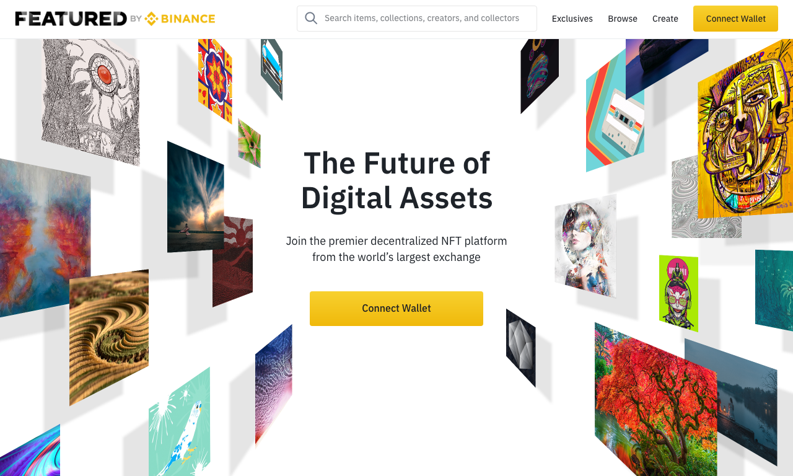
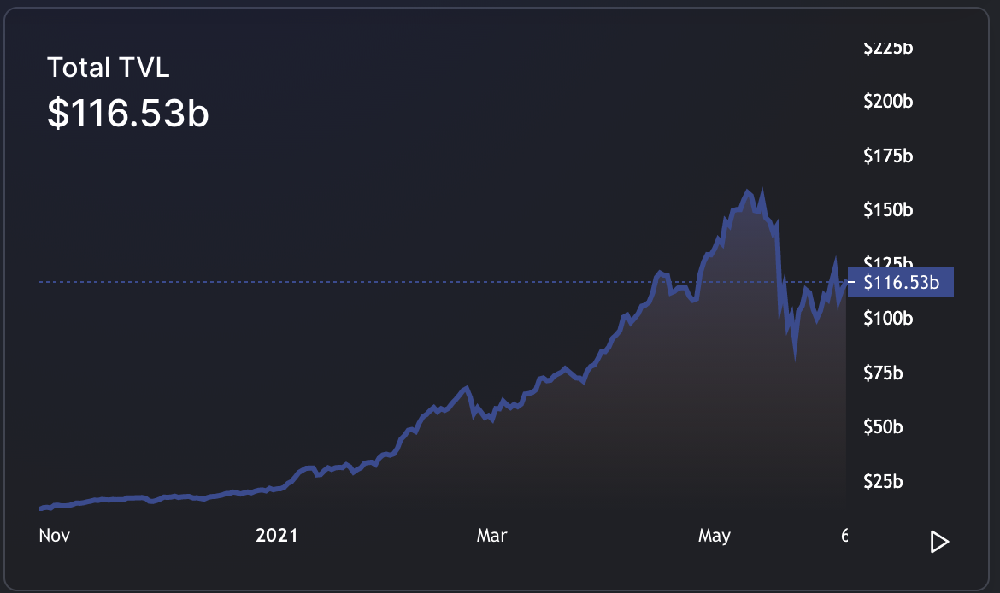

We are excited to announce the imminent launch of a new platform that we've been incubating called Featured by Binance. Our vision is to provide a non-custodial, on-chain platform to facilitate the full lifecycle of NFTs for creators, brands and their fans.

We want to apply our deep experience in launching tokens and creating markets to the NFT space. At launch, the platform will focus on helping our brand partners launch NFT assets with strong unique narratives, a marketplace to trade those assets, and creator tools to mint, sell and showcase their NFT creations.
We’d like to use the rest of this post to share our perspectives on where this burgeoning NFT space is going. We hope that this also helps you get a sense of how our platform will evolve in the future.
If you haven’t been living under a rock lately, you would know that NFTs have captured the imagination of the mainstream public, and the word ‘NFT’ has entered the vernacular of popular culture.
It’s interesting to observe that the hype was driven in equal parts by creators/fans embracing this newfangled technology, and on the flip side, mainstream media who is desperately trying to understand why anyone would spend meaningful money on easily replicable digital assets.
In any case, the NFT hype peaked in early May 2021 and has since settled back down to less frothy levels. Even then, NFT transaction volumes are an order of magnitude higher than before, when hardly anybody knew what NFTs were. I’ll take 10x growth in three months any day.
This begs the question: Are NFTs a flash in the pan or here to stay?
It’s not hard to guess where we stand on this. We think NFTs are part of a bigger behavioral shift and our platform would like to be a factor in how this plays out.
As we all experienced in the past year, the pandemic has accelerated the shift to digital in many aspects of our lives. The way we work, play, conduct commerce, socialize, experience culture and entertain ourselves have all been transformed, some in more jarring ways than others.
In 2020, billings and sales of digital goods and services facilitated by the App Store ecosystem increased by more than 40%.
A Global Perspective on the Apple App Store Ecosystem
Now, brands have to find new ways to meaningfully engage their users in the digital realm. Some verticals that are more digitally-native, like games and streaming entertainment, are more well-positioned than the others, like sports, consumer goods, fine arts and live entertainment, that have traditionally operated in the physical realm.
Regardless, a consistent and well-proven element underlying all digital experiences is the use of digital goods. Digital goods have been used successfully in multitude of ways to engage fans and monetize IP. GenZs, who grew up in the era of app stores, are primary drivers of this trend as there is an increasing number of them coming into credit-worthy age.
We believe that the next evolution of digital goods will be on the blockchain and NFTs are the first step towards that transformation.
What we are seeing are early market dynamics pushing digital goods towards a better platform. Just as ‘money’ and financial markets (DeFi) have, slowly but surely, migrated to the blockchain, digital goods will do the same.

DeFi Total-Value-Locked across all chains in June 2021. (DefiLlama.com)
At this point, It’s helpful to rehash the unique properties of the blockchain that make it a better platform for digital goods.
Blockchains enable peer-to-peer transactions via smart contracts without any trusted intermediaries. By minting NFTs on the blockchain, creators are establishing a direct relationship with their fans free of any platform risks.
Blockchains are public infrastructure that are universally accessible. Everyone, regardless of where you're located or who you are, interacts with NFT contracts in the same way, unfettered by proprietary platforms and restrictions.
NFTs, once minted on the blockchain, cannot be altered. This confers a strong sense of ownership and permanence, which is especially important in the gaming and the collectibles space. In fact, based on the genesis story of Ethereum, this may be one of the reasons why Vitalik invented Ethereum.
NFTs are based on open standards (ERC/BEP-721, ERC/BEP-1155 etc.). Standards give rise to network effects, interoperability and composability, the same reasons why DeFi (and the internet for that matter) is such a disruptive force. We believe this will unlock a lot of exciting innovation in digital goods.
Our MO has always been to partner with forward-looking brands and creators that have a long-term perspective on this vision. In the past few months, we have engaged with many artists, brands, IPs and creators in all manners of crypto sophistication, popularity and genres.
In our conversations, we found kindred spirits motivated to embrace and experiment with NFTs. We are thrilled to have the opportunity to collaborate with amazing artists and brand partners in this journey, which we will announce closer to launch day.
For creators and brands whom we haven’t had a chance to engage, we’d love to speak with you. Please drop us a note at creators@featured.market.
For NFT enthusiasts and collectors, please sign up to be notified at our Featured by Binance home page.